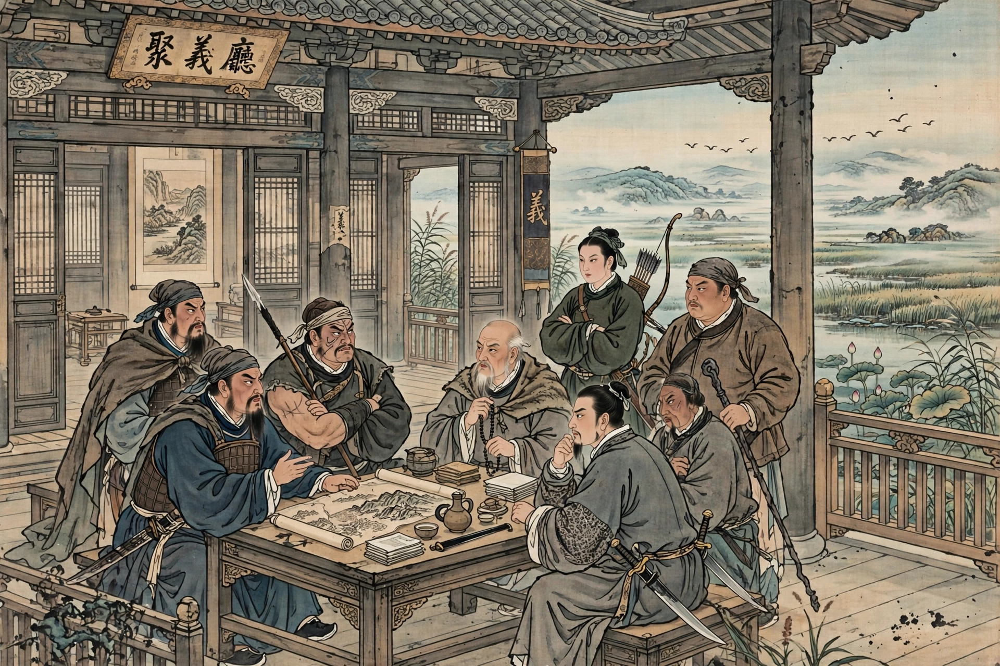

| 108 Stars of Destiny | |
|---|---|
 | |
| Source | Water Margin (14th century) |
| Attribution | Shi Nai'an (attributed) |
| Composition | 36 Heavenly Spirits, 72 Earthly Fiends |
| Base | Liangshan Marsh, Shandong |
The 108 Outlaws, also known as the 108 Stars of Destiny or the 108 Heroes, are the main characters of the classic Chinese novel Water Margin, one of the Four Great Classical Novels of Chinese literature. Wronged, exiled, or driven to rebellion by corrupt officials, they gather at the stronghold of Liangshan Marsh under the leadership first of Chao Gai and then of Song Jiang, and are eventually ranked as 36 Heavenly Spirits (Tiāngāng) and 72 Earthly Fiends (Dìshà).
The number 108 draws on Chinese folk religion and Buddhism, in which 108 is a sacred number associated with defilements to be overcome. In the novel's frame story, the marshal Hong Xin unwittingly releases 108 demon lords — 36 heavenly and 72 earthly — who had been sealed beneath a stone tortoise at a Taoist temple on Mount Longhu. These spirits are reincarnated as the heroes of the story.
Individual story cycles recount how each hero — among them the tattooed monk Lu Zhishen, the "Panther Head" Lin Chong, the tiger-fighting Wu Song, and the resourceful strategist Wu Yong — was driven to outlawry. After Chao Gai's death by a poisoned arrow, Song Jiang leads the band; a stone stele then reveals the divine ranking of all 108, with Song Jiang first and Lu Junyi second. The band adopts the motto of "acting on Heaven's behalf" (tì tiān xíng dào).
Song Jiang seeks and obtains imperial amnesty from Emperor Huizong, after which the former outlaws campaign for the Song dynasty against the Liao and against rival rebels such as Fang La. The campaigns destroy the band: many heroes are killed or die of disease, and Song Jiang himself is poisoned by corrupt courtiers, dying alongside Li Kui.